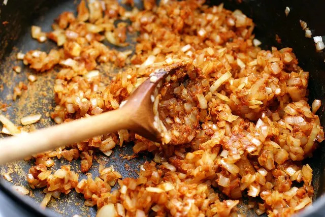

Description
American goulash is an easy and delicious one-pot dinner that can be made in under an hour if you have better time management than I do. If you're like me and like to add too much water and get too lazy to strain it out than it'll take approximately an hour and 20 minutes. I sure do love this shit! Though it actually has very little resemblance to the Hungarian dish of it's namesake, I don't give a shit about that, and this is a modified recipe from my mommy :)
Actually, so I don't have to do a bunch of content writing outside of this introduction, the recipe will be based on one from Allrecipes
Ingredients
- 1 tablespoon olive oil
- 2 pounds ground beef
- 1 large onion, diced
- 4 cloves garlic, minced
- 2 large bay leaves
- 2 tablespoons paprika
- 2 teaspoons italian seasoning
- 2 teaspoons salt
- 1/2 teaspoon pepper
- 1 pinch cayenne
- 1 quart water or chicken broth
- 1 jar of marinara sauce
- 1 can diced tomatoes
- 1 cup water
- 2 tbsp soy sauce
- 2 cups elbow macaroni
- 1/4 cup chopped italian parsley
- 1 cup shredded cheddar
Steps
- 1. Gather Ingredients
- 2. Heat oil in a pot over medium-high heat. Add ground beef and onion; cook and stir until beef is browned and crumbly and onion is translucent, about 5 minutes. Continue to cook and stir until liquid is evaporated, 3 to 5 minutes. Add garlic, bay leaves, paprika, Italian seasoning, salt, black pepper, and cayenne.
- 3. Cook, stirring occasionally, until flavors come together, about 3 minutes. Pour in broth, marinara sauce, and diced tomatoes. Pour water into the sauce jar, swirl, and pour into the pot. Stir in soy sauce; bring to a simmer. Reduce the heat to medium and simmer until flavors intensify, about 30 minutes.
- 4. Increase the heat to medium-high and bring to a rapid simmer. Stir in macaroni; cook, stirring occasionally, until just barely tender, about 12 minutes. Check for doneness after 10 minutes.
- 5. Remove from the heat and discard bay leaves. Stir in Cheddar and parsley. Cover and let rest for 5 minutes. Taste and season as desired.